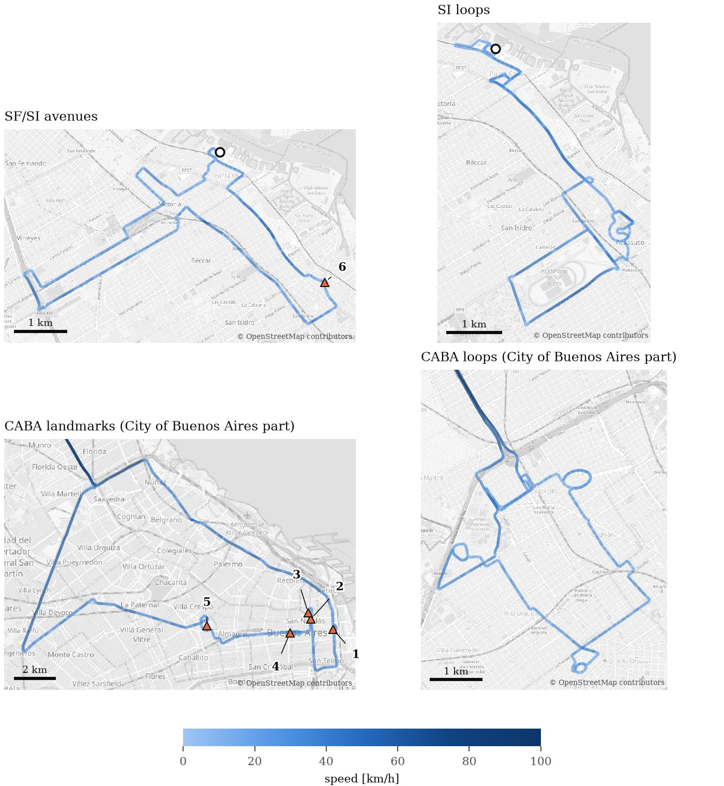

Overview
Public multimodal driving datasets come almost exclusively from North America, Europe and East Asia, so the traffic of Latin American cities, with motorcycles filtering between lanes, buses stopping in mixed traffic, pedestrians and hand-pulled carts, cobblestones and faded markings, is essentially missing from them.
The Buenos Aires Dataset was recorded in the Buenos Aires Metropolitan Area across residential streets, avenues, the historic center and highways, with a vehicle carrying a 64-beam LiDAR, five cameras, an industrial IMU, two RTK GNSS receivers, a microphone and its drive-by-wire bus. Beyond the data, we treat time synchronization as a result rather than an assumption: every sensor stream is referenced to GNSS time, and the synchronization is verified over every recording. The release includes the calibration, a reference trajectory obtained by multi-sensor fusion, and a Python toolkit to read the data and evaluate trajectories.

Sensors
Rates are the measured mean rates over the release. Every message carries a GNSS-referenced UTC stamp; the last column says how each stream gets it.
| Sensor | Model | Rate | Characteristics | Time stamp |
|---|---|---|---|---|
| LiDAR | Velodyne HDL-64E S3 | 10 Hz | 64 beams, 360° horizontal, elevations −23.5° to +3.2°, 1.6–2.0 × 105 points per scan | sensor clock (PPS + NMEA) |
| Front cameras (×2) | IDS UI-3280CP-C-HQ Rev. 2, 5 mm f/2.8 | 10 Hz | global shutter, 1224 × 1026, HFoV 81°, stereo baseline 0.53 m, triggered by the LiDAR | camera clock, corrected with the LiDAR |
| Lateral cameras (×2) | IDS UI-3280CP-C-HQ Rev. 2, 8 mm f/1.4 | 20 Hz | global shutter, 1224 × 1026, HFoV 53°–55° | camera clock, mapped to GNSS |
| Rear camera | IDS UI-3270CP, 9–90 mm f/1.8 | 20 Hz | global shutter, 1024 × 770, HFoV 42° | camera clock, mapped to GNSS |
| IMU | Xsens MTi-610 | 100 Hz | noise density: accelerometer 9.6 × 10−4 m/s²/√Hz, gyroscope 4.4 × 10−4 rad/s/√Hz | IMU clock, mapped to GNSS |
| GNSS (×2) | u-blox ZED-F9P | 5 Hz | multi-band; moving base with NTRIP RTK corrections, rover with moving baseline (heading) | GNSS epoch |
| Microphone | Behringer ECM8000 | 44.1 kHz | omnidirectional measurement microphone, 16 bit, mono | aligned with claps |
| Vehicle bus | Dataspeed DBW kit | 1–100 Hz | pedals, steering, gear, wheel speeds, tire pressures, sonars, vehicle IMU | host clock |
Calibration
Camera intrinsics, the stereo pair, the LiDAR–camera extrinsics and the IMU noise model are released with the dedicated calibration recordings (calib/), so every calibration can be recomputed and checked with the toolkit.
Reference trajectory
Every sequence has a reference trajectory from multi-sensor fusion (MINS) of the IMU, the front stereo pair, the LiDAR, the wheel speeds and both GNSS receivers, with its covariance, in the ground_truth bags.
Sequences
- SF/SI avenues (3 February 2026): main avenues of San Fernando and San Isidro.
- SI loops (18 March 2026): residential streets of San Isidro, driven to produce loop closures, with cobblestone pavement, speed bumps and dense tree cover.
- CABA landmarks (23 March 2026): from San Fernando to the center of the City of Buenos Aires (CABA) and back, along the Ramal Tigre and Panamericana highways and the General Paz avenue, passing the Casa Rosada, the Obelisco, the Teatro Colón, the National Congress and Parque Centenario.
- CABA loops (30 March 2026): from San Fernando to CABA along the same highways, followed by repeated loops over residential streets in the north of the City of Buenos Aires.
| Sequence | Folder | Start (UTC−3) | Splits | Duration | Distance | Max. speed | Stopped | Size |
|---|---|---|---|---|---|---|---|---|
| SF/SI avenues | sanfer_sanisidro | 2026-02-03 13:41 | 2 | 1:00:26 | 20.0 km | 60.9 km/h | 16.8 % | 383 GB |
| SI loops | loop_sanisidro | 2026-03-18 10:53 | 3 | 1:12:39 | 22.5 km | 61.7 km/h | 20.3 % | 480 GB |
| CABA landmarks | caba | 2026-03-23 11:15 | 9 | 3:17:22 | 81.9 km | 101.4 km/h | 28.0 % | 1,197 GB |
| CABA loops | loop_caba | 2026-03-30 12:11 | 5 | 2:24:17 | 55.6 km | 98.2 km/h | 22.4 % | 883 GB |
| Total | 19 | 7:54:45 | 180.0 km | 2,942 GB |

Download
The data and the toolkit are being prepared for release and will be linked from this page soon.
The data are hosted on Hugging Face as ROS 2 MCAP bags, one per sensor group and split, so you can download only what you need. The cameras and the LiDAR account for 60 % and 40 % of the 2.9 TB; all the other groups together take less than 10 GB.
<root>/<sequence>/split_XX/<group>/<group>_0.mcap group: cameras · lidar · imu_gps · dataspeed · wheel · microphone · ground_truth · tf_static <root>/calib/ # calibration recordings
The toolkit's download command fetches any subset and resumes interrupted downloads:
pip install "badataset[download] @ git+https://github.com/udesa-linar/badataset_sdk" badataset-download /data/buenos_aires # everything (2.9 TB) badataset-download /data/buenos_aires --sequences loop_caba \ --groups imu_gps ground_truth tf_static # IMU, GNSS and reference only badataset-download /data/buenos_aires --sequences caba --splits split_03 # one short split badataset-download /data/buenos_aires --calib # calibration recordings
MCAP embeds the message definitions, so every topic, including the u-blox and Dataspeed messages, can be decoded without ROS or the corresponding packages.
Toolkit
The badataset Python package reads the bags without a ROS installation, provides the calibration as matrices with LiDAR-to-camera projection, evaluates trajectories against the reference, and contains the scripts that reproduce every calibration from the released recordings and compare the result with the release. The MINS configuration of the reference trajectory is included.
from badataset import Dataset, calib, sync
from badataset.groundtruth import Reference
from badataset import evaluate as E
seq = Dataset('/data/buenos_aires').sequence('loop_caba')
for t, imu in seq.messages('/imu/data'): # any topic; t = GNSS-referenced stamp [s]
...
for f in sync.front_frames(seq, start=t0, end=t0 + 2):
f.cam1, f.cam5, f.cloud.xyz # stereo pair + the LiDAR scan of its trigger
ref = Reference(seq) # reference trajectory, any sensor frame
E.rpe_kitti(ref.traj, E.load_tum('mine.txt')) # relative error over 100–800 mLicense & privacy
License
The data (sensor recordings, calibration and reference trajectories) are released under the Creative Commons Attribution-NonCommercial-ShareAlike 4.0 license. The toolkit is released under the Apache License 2.0.
Privacy
The sequences were recorded on public roads. Faces and license plates were blurred before release, but automatic detection can miss some of them. Please do not attempt to identify any person or vehicle. If you find a face or plate that is not blurred, or you appear in the data and want an image removed, write to linar@udesa.edu.ar with the sequence, split and time.
Citation
If you use the dataset or the toolkit, please cite:
@article{roca2026buenosaires,
title = {The Buenos Aires Dataset: Multimodal Driving Data from a Latin American Metropolis
with GNSS-Referenced Time Synchronization},
author = {Roca, Agust{\'i}n and Castro, Gast{\'o}n and Rosito, Claus and Torre, Gabriel and
Mas, Ignacio and Giribet, Juan I.},
journal = {The International Journal of Robotics Research},
note = {submitted},
year = {2026}
}Updates
Changes to the data or the toolkit are listed here; the Hugging Face repository and the toolkit keep every released version.
- v1.0: initial release.